本篇是学习python爬虫的笔记，包括了requst、beautifulSoap、selenium+phontomJS、scrapy等几种方式
正则表达式
定界符
.匹配\n之外所有的
^1.*1$, 1开头，1结尾的任意字符
\b 匹配一个边界
\B 匹配非边界
个数/次数
- {0,}
- {1,}
? {0,1}
{n}
{n,} 至少
{n,m} n-m次之间
他们都是对前一个字符而言
hello: hel{0,1}o 指的是对l而言
在次数后边加一个?指的是懒惰模式，只匹配最少的个数
hellllo: hel+会匹配到helll, hel+?则匹配到hel
范围
[xyz]
[^xyz]
[a-z]
[^a-z]
空白符
\f 匹配一个换页符
\n 换行
\r 回车
\t 制表符
语法塘
\d [0-9]
\D [^0-9]
\s [\n\r\t\f]
\S [^\n\r\t\f]
\w [a-zA-Z0-9_]
\W [^a-zA-Z0-9_]
正则表达式的使用
1 | import re |
css选择器
. 指的是class# 指的是id@ 指的是属性
element 就是一个元素
not(selector) not(p) 非p元素
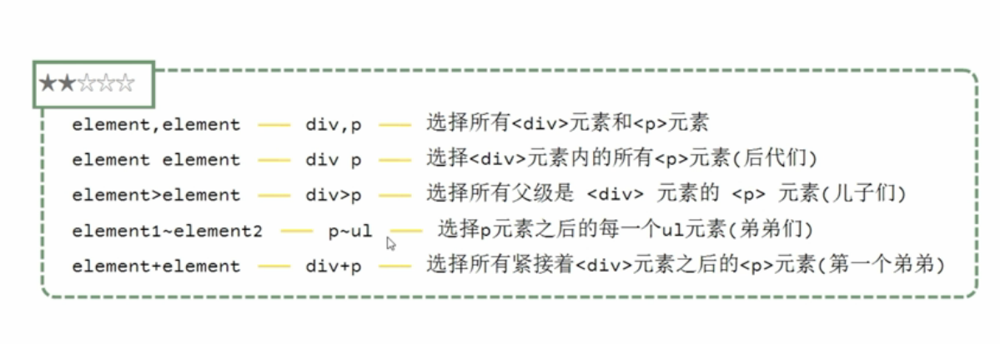
空格 代表后代们> 代表子代
element.class.class p.hello.world 所有class=”hello world”的表掐
element.class element.class p.hello p.class 所有class=hello的p标签下的所有class=”world”的p标签
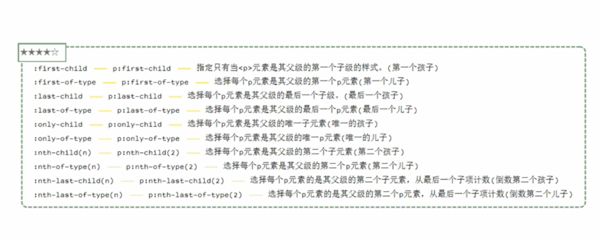
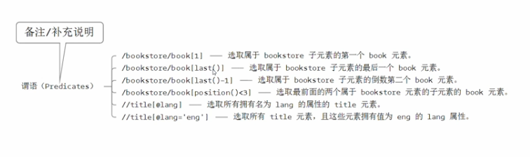
xpath
what
xml路径语言，拥用在数据结构树中查找节点的能力
被开发者用作小型查询语言来使用
xpath通过元素和属性进行导航
why
支持html
scrapy支持xpath来查找节点
deeper
- 路径表达式：
/从根节点选取
//不用考虑节点
@选取属性 - 谓语（备注）
- 通配符
- 任何元素节点
@* 任何属性节点
- 任何元素节点
how
安装
pip install lxml使用
1
2
3
4from lxml import etree
html = etree.parse("hello.html")
result = html.xpath("//li/a[@href="link.html"]") #a标签的@href属性=link.html的元素
result = html.xpath("//*[@class='bold']") #所有标签，其class属性为bold值的元素
request【获取html】
简介
用python语言基于urllib编写
爬虫就是爬取相应的数据，然后存于数据库
数据就需有html文件，这就需要requests来获取
有了html文件如何爬取想要的数据，就需要下节的beautifulsoap
安装
pip install requests
http
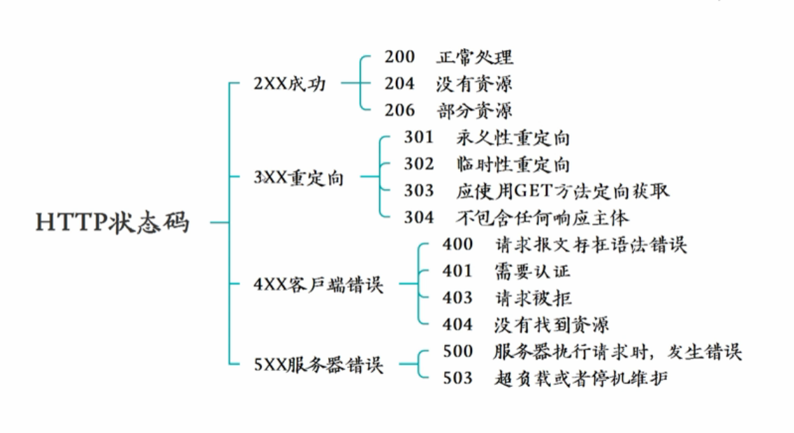
使用
使用
1
2import requests
r = requests.get("http://httpbin.org/get"[,参数key=参数value])参数有很多包括params=payload , headers=head, data=payload,data=json.dumps(payload), files=file,cookies=cookie,timeout=1,proxies=proxie
持久会话
持久会话其实就是不用request，而用session而已.1
2s = requests.Session()
result = s.get(url)
- 代理
使用爬虫时，如果长时间有一个IP，服务端可能会封这个ip，然后可以做一个代理池，均匀的用代理池中的ip进行访问，这样每个ip的访问量就不会很高
beautifulsoap【从html获取数据
简介
从html抓取数据的工具
beautiful像极了之前解析xml的工具，不过它增加了CSS选择器
安装
pip install beautifulsoup4
pip install lxml
四大对象
- Beautiful soup:整个文档的全部内容
1 | from bs4 import BeautifulSoup |
- Tag：标签
1 | print(type(soup.title)) |
- Comment
特殊的NavigableString,如果这个内容正好是注释那么是一个Comment对象
同样也是soup.p.string，只不过这个string本身应该是注释
遍历文档树
元素的内容
- .string属性
- strings
- stripped_srings
直接子节点
- .contents属性：将tag的子节点
- .children属性:将list_iterator方式转换
所有子孙节点
- .descendants所有子节点的递归
兄弟节点
- next_sibling
- previous_sibling
- next_siblings
- previous_siblings
父节点
- parent
- parents
前后节点
- next_element
- previous_elements
- next_elements
- previous_elements
搜索文档树
- find_all()当前标签的所有子元素
- soup.find_all(‘p’) #找所有p标签
- soup.find_all(‘p’, limit=2) #找前2个p标签
- soup.find_all(re.compile(‘^p’)) 通过正则找以p开头的标签
- soup.find_all([‘p’,’div’]) #找所有p与div标签
- soup.find_all(id=”panda”) #找所有id属性为panda的标签
- soup.find_all(text=re.compile(‘context$’)) #找所有内容以context结尾的内容（内容本身也是元素）
- 其他find
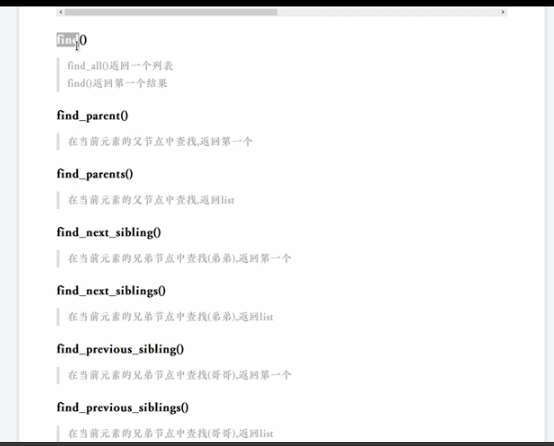
css选择器
- soup.select(“p”) 所有p标签
- soup.select(‘.p-class’) class=p-class的标签
- soup.select(‘#panda’) id=panda的标签
- soup.select(‘p #panda’) 所有p标签下，id=panda的后代比
- soup.select(‘p[class=’p-class’]’) class属性为p-class的p标签
mongoDB
安装
1 | mongod -dbpath d:\mongodb\data\db |
pip install pymongo
第三方可视化工具robomongo安装
基本概念
database –> collection（集合） –> document(文档) –> field(域)
index索引，primary_key：mongodb自动将_id字段设置为主键
集合与文档注意
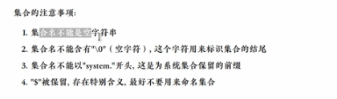
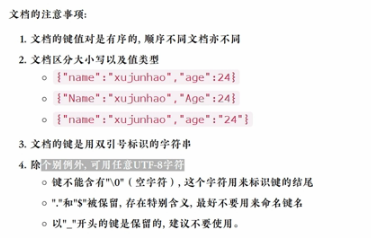数据类型
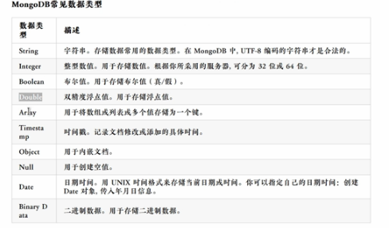
使用
数据库
1 | use hello |
增insert
1 | use hello |
查find
1 | use hello |
改update
1 | use hello |
删除remove
db.user.remove({sex:"male"})
python控制mongodb
1 | from pymongo import MongoClient |
查找
1 | datas = user_collection.find() |
增加
1 | user2 = [ |
修改
1 | usersToUpdate = {"sex":"female"} |
删除
1 | usertoDel = {"name":"pony"} |
异步加载
what
就是局部刷新，只刷新网页的局部内容，这样效率高，响应快，用户体验好
也就是ajax
how
就是从浏览器开发者工具中，找到其利用ajax请求的界面的url，然后去获取即可
实例：pexelstest.py
在这个例子中，访问https://www.pexels.com/ 时，从开发者工具里看，当界面往下移动时，浏览器会请求页面，来达到异步加载的目的
通过查看访问的url(post开头的访问)，发现其访问的url是ttps://www.pexels.com/?page=n n=1,2,3..等数字由此来完成异步加载数据的爬取。
这个例子中，在得到image的url后，通过
1 | imageData = requests.get(url, headers=headers) |
通过imageData的content属性访问的数据，将数据打出，发现是二进制，text属性打出的是字符
问题
为什么在获取糗事百科时，使用.author.clearfix a:nth-of-type(2)只选择了一个
而使用.author.clearfix > a:nth-of-type却可以都选择出来正则表达式节选字段时，为什么没有把?h节选出来？感觉只节选了用(.?)段
是因为懒惰模式(.?)必须加括号才是懒惰模式，.*?不是requests对象获取到url后，data.text与data.content的区别
感觉上request.content得到的是二进制而data.text得到的是字符新知
标签元素可以通过get(“属性”)来获取属性的值
表单
表单登录
通过2种方式来获取到表单的信息
然后用post传递即可
模拟登录
绕过表单来使用cookie登录，因为网站通过cookie来识别用户，但cookie有失效日期的，切cookie如何来获取
实例:lagoutest.py
1 | data = { |
这样既可，即post了表单，也用cookie传递了登录信息
模拟浏览器：selenium+phontomJS
简介
通过python模块操作headless（类似于没有界面也能用的）类型的浏览器，来达到爬取数据的目的
这种爬取彼上边的用requests与beautifulsoup简单一些，它不再需要request，但需要lxml或者re来解析爬到的数据
使用
selenium ==> 操作浏览器的python库
phontomJS ==> headless的浏览器
实例：taobaotest.py
1 | from selenium import webdriver |
scrapy
安装
lxml
pip install lxmlzope.interface
pip install zope.interfacetwisted
pip install wheel
https://www.lfd.uci.edu/~gohlke/pythonlibs/#twisted 下载与python3.6版本对应的32或者64位的twisted
pip install Twist*.whl #这一步要在下载的目录下执行pyOpenSSL
pip install pyOpenSSLpywin32
https://www.lfd.uci.edu/~gohlke/pythonlibs/#pywin32 与twisted的安装相同
pip install pywin32*.whl
然后需要将python/lib/site-packages/pywin32_system32下的2个dll拷贝到对应的windws/System32下pip install pypiwin32scrapy
pip install scrapy
创建
在要创建的目录下：scrapy startproject xiaozhu
scrapy文件介绍
- items.py
定义爬取的字段 - piplines.py
爬虫数据处理，入库 - settings.py
项目设置 - xiaozhuspider.py
用户自建文件，编写爬虫的逻辑
scrapy爬虫运行
- scrapy crawl xiaozhu
运行文件
python d:\project_python\scrapy\xiaozhu\main.py
main.py
1
2from scrapy import cmdline
cmdline.execute('scrapy crawl xiaozhu').split())
实例：
注意：
安装pywin32不好使
xiaogou.py的放置位置，要放到sipders目录下，其他就与老师说的一样了
总结
- 没有爬取成功
不是没有爬取成功，而是解析的不对，一开始以为是进入不了，所以在setting.py中浪费了太多的时间 - xpath解析不对
下层是在生曾基础之上完成，直接复制，修改即可 - 一直写一个
for 循环傻逼了 - 写入库不对
db.hello.find()傻逼了 - scantcnt解析不对，extart[0]改为extract[1]之后ok，因为他有2个元素
scrapy深入
scrapy架构及运作流程
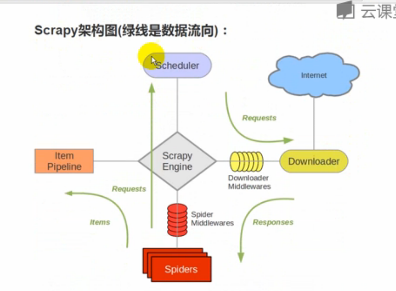
有上图的构架图，可以看出运作的流程
- 引擎询问spider要处理的网址
- spider返回start_url地址
- 引擎交把request请求交给调度器入队列
调度把处理好的请求返回给引擎
引擎把处理好的请求交给下载器
- 下载器按照下载中间件件的设置下载请求
下载器把下载好的东西交给引擎
引擎将下载好的数据交给spider，spider根据自己的逻辑进行数据爬取
- spider将爬取的item返回给引擎，也可能是下一个url
- 引擎交给管道进行处理
- 如果是下一个url，从第3步执行
知道调度器中不存在request了，程序结束
步骤
- 新建项目：
scrapy startproject xxx - 确定爬取目标，这个目标主要是指爬取的字段，items.py
- 制作爬虫:spiders/xxx.py 制定爬取的url，以及要解析的内容
- 存储内容:pipelines.py，设置管道存储爬取的内容
各文档细节
pipeline
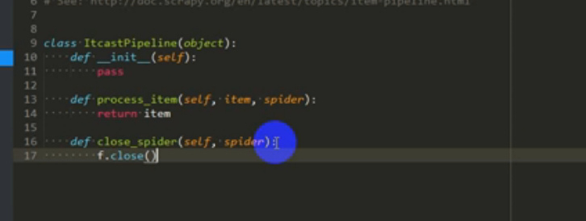
spider
response的选择器在python3中可以直接写，而不用将response转换为Selector对象node_list = response.xpath("//div[@class='li_txt']")
从xpath对象再次爬去时，可以直接写子标签，也可以./子标签如item["position"] = node.xpath('./td[1]/a/text()').extract()[0]item["count"] = node.xpath('td[1]/a/text()').extract()[0]
spider中的数据要想通过管道来处理，必须逐个yield出来，不能直接yield集合。
但要是直接保存在json,xml文件，而不是通过管道来保存，可以直接返回集合
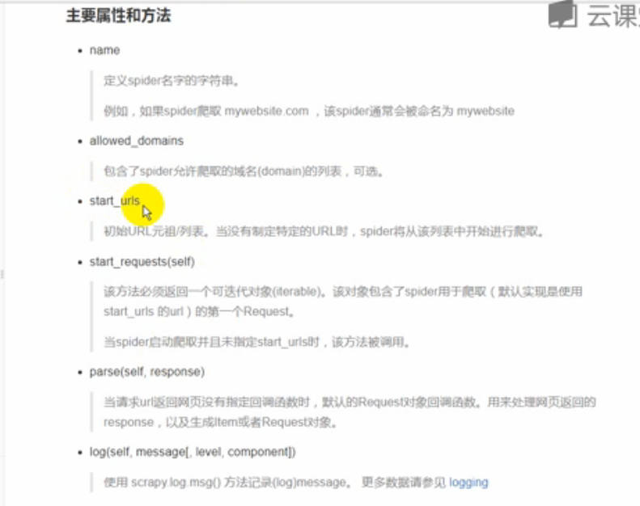
setting
中间件设置
setting中有中间件的指定，字典后的数字是优先级排名，越靠前越容易被处理。
关于中间件是进阶版本，没有更详细的介绍。robots协议
遵守可能会被禁止
各命令细节
保存数据
scrapy默认自带4种保存数据的方式
1 | #json格式，默认unicode编码 |
查看爬虫 scrapy list
在spiders目录下，执行scrapy list，则会将已经有的爬虫列出
scrapy shell
scrapy的控制台
通过 scrapy shell “http://www.baidu.com" 来进入
在控制台下，可以对爬取的数据进行测试，查看结果，很好用
如：response.headers可以看到response的包头
response.body可以看到包体
response.xpath(“”)可以去测试选择的内容
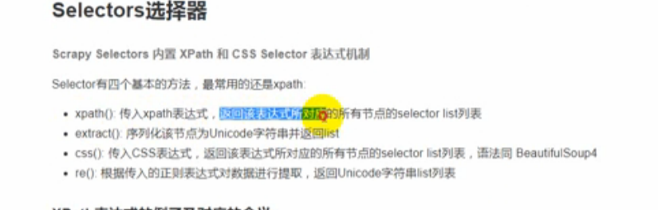
注意：
- python2.x默认的编码环境是ascii码，可能与爬取的数据编码格式不一致而造成乱码
可以在pipeline存储时
1 | import sys |
- scrapy很适合处理静态的网页，动态的网页最容易的方式是抓波json文件
爬取图片案例
图片等爬取需要专用的pipeline
从源码中可以看到，pipe目录下有个ImagesPileline专门用来爬去图片
它有2个方法，可以从pipe值再次发出请求，另一个是请求结束后的处理（重命名）
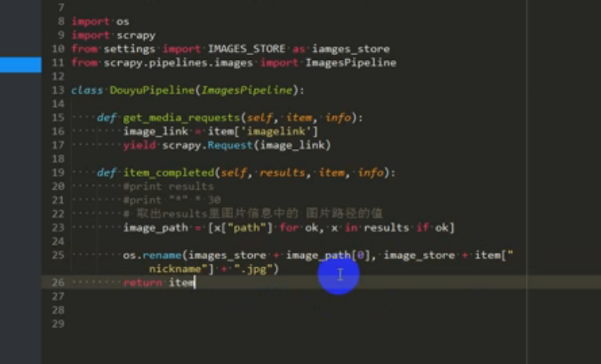使用ImagePipline之后保存的文件路径
在setting文件中，注意些IMAGES_STORE = “路径”- 模拟手机
所谓的模拟手机，就是用手机的Agent即可，百度中搜索手机User-Agent即可 - robots禁止问题
爬取如果遵循robots协议，可能会被有些网站所禁止，如百度，在setting文件中设置False或者不启用即可 - spider截图
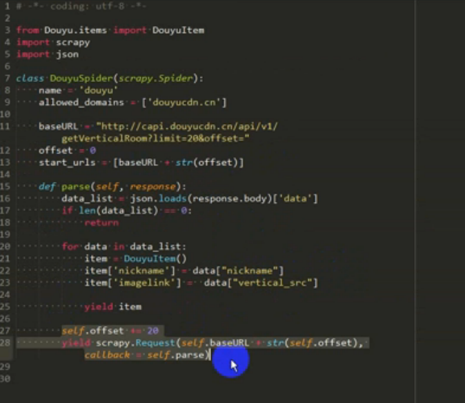 - 其实的url直接返回json是怎么个情况,是否与python的web有关
其他
md5
linux命令行下，直接输入md5 字符串，就可以看到此字符串的md5码
源码
注意源码的位置，源码下的pipe下有不同的管道